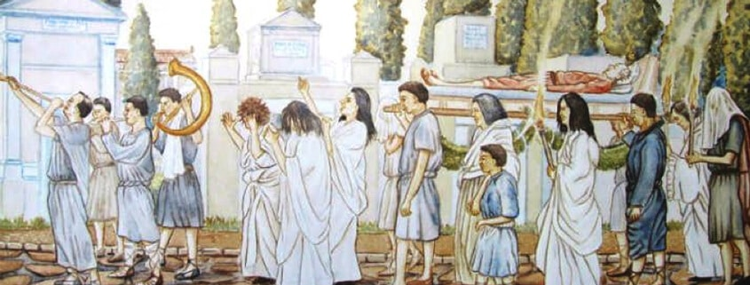
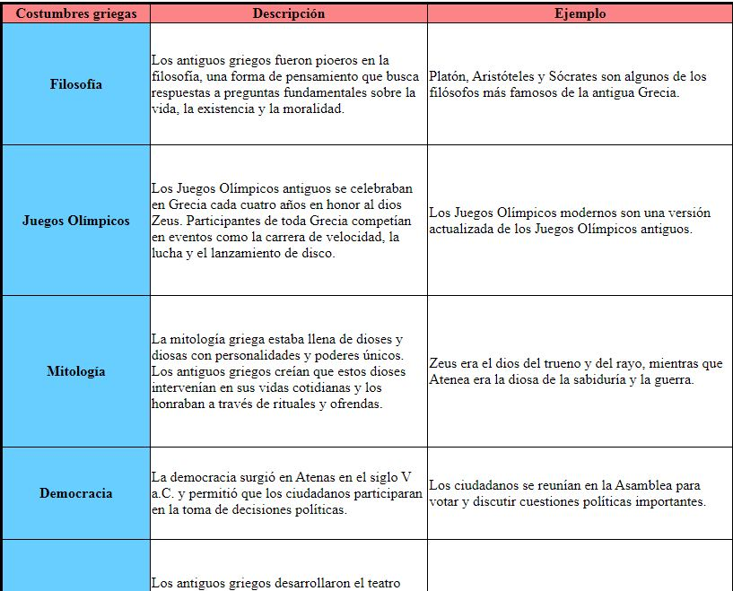

consultar costumbres
consultar video
consultar tabla
margenes

.
-temas-
-»costumbres«-
>>>Si estás interesado en conocer más sobre las curiosidades de las costumbres griegas antiguas, te invito a clickear la siguiente imagen. En ella encontrarás información sobre aspectos como la mitología, los Juegos Olímpicos, la filosofía, la poesía épica, la democracia y el arte griego.<<<

-»video expilicativo«-
>>> Descubre las curiosidades de la antigua cultura griega en nuestro nuevo video. Sumérgete en la fascinante historia y aprende sobre sus mitos, filosofía, arte y arquitectura. Te invitamos a explorar este mundo sorprendente que ha dejado una huella duradera en la historia humana,¡si te interesa clickea la imagen de abajo!<<<

-»tabla de costumbres«-
>>> Descubre la cultura griega antigua a través de nuestra tabla interactiva de curiosidades. Haz clic en las imágenes para explorar aspectos intrigantes de su mitología, filosofía, arte y vida cotidiana. Sumérgete en un viaje fascinante y descubre el legado dejado por esta civilización legendaria. ¡No te pierdas esta oportunidad de explorar la antigua Grecia!<<<

-»margenes«-
>>> Descubre los enigmas de la antigua Grecia en un emocionante viaje. Haz clic en la imagen para explorar los mitos y las curiosidades de los dioses del Olimpo, los avances culturales y la arquitectura impresionante. Desvela los secretos de una civilización que dejó su huella en la historia. ¡No te lo pierdas!<<<

-»integrantes«-